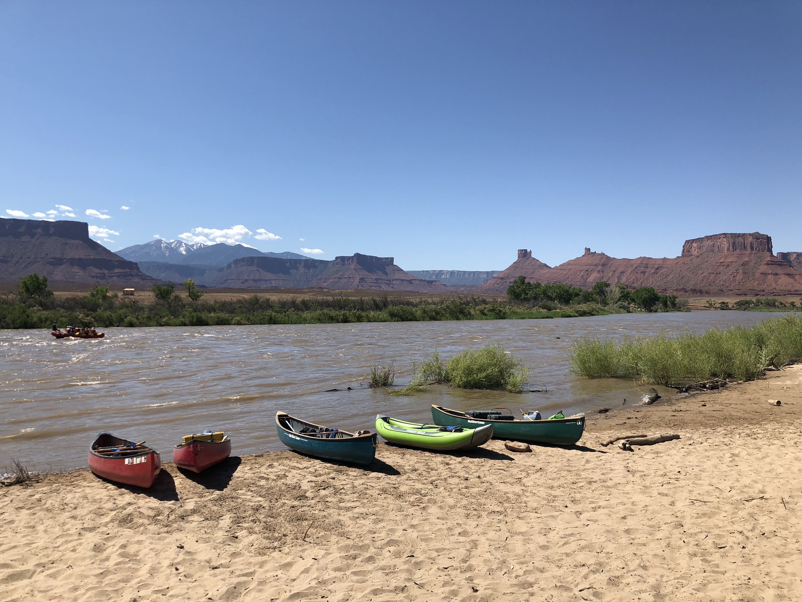

Why I Enjoy Canoeing
Canoeing helps me build endurance, coordination, and patience. I enjoy exploring new rivers and lakes, because every trip feels a little different depending on the water, weather, and surroundings. Some of my best memories come from being out on the water with family and friends. Even though I do not go as often as I would like, it is something I always look forward to and try to make time for each year.
My Favorite Rivers
- #1 Chama River
- #2 Colorado River
- #3 Rio Grande River
My Favorite Part
My favorite part of canoeing is the feeling of being out in nature with nothing but the sound of the water and the paddle. It is rewarding to finish a long stretch of river or reach a destination after working together to get there.
Canoeing Adventures


Learn More About Canoeing
Check out Paddling.com to learn more about canoeing routes, techniques, and safety tips for beginners and experienced paddlers.